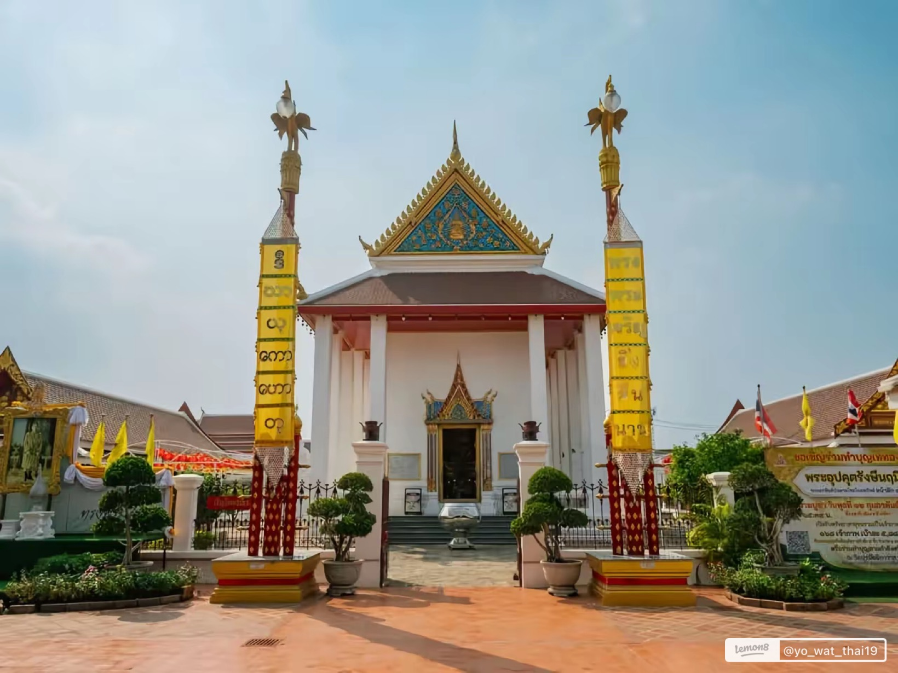
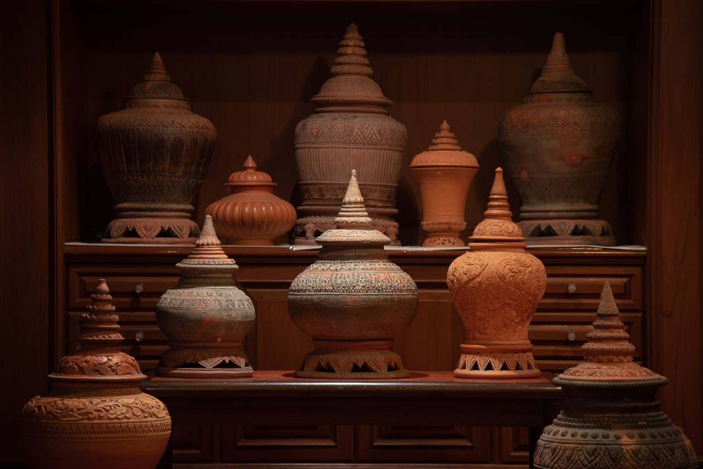
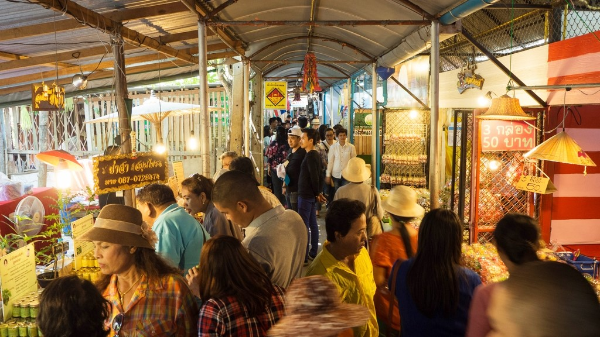
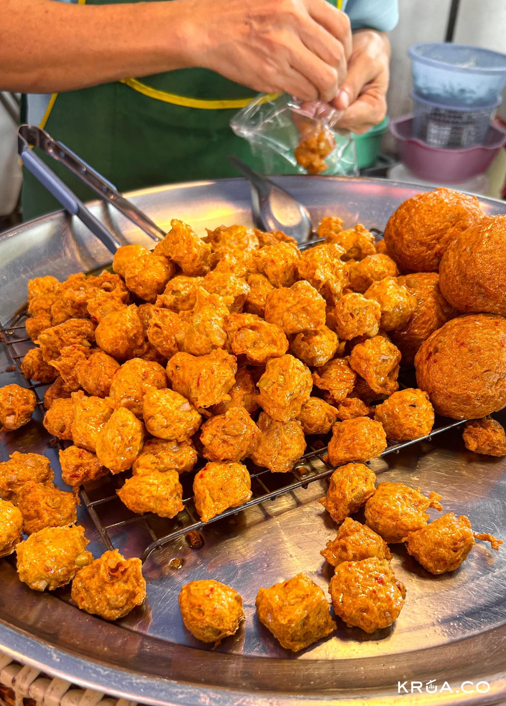
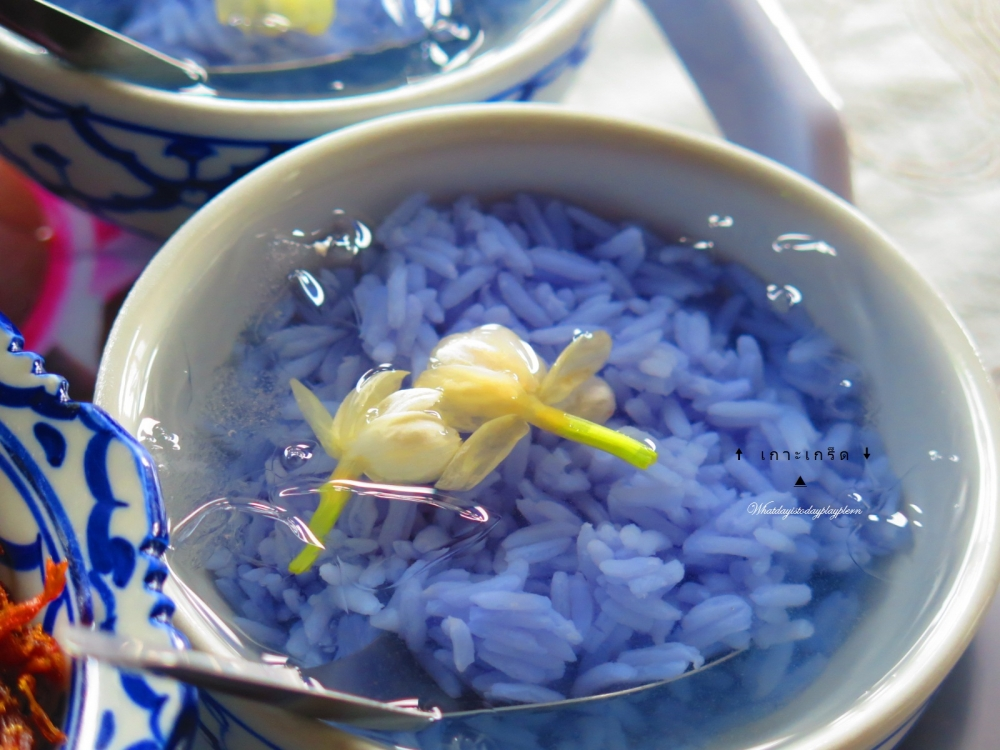

นนทบุรี · นั่งเรือ 5 นาที
มีเวลาครึ่งวัน
ก็ไปเกาะเกร็ดได้
เกาะกลางแม่น้ำเจ้าพระยาที่ยังมีชุมชนมอญอยู่จริง วัดเก่า เตาเผาเครื่องปั้นดินเผา และคาเฟ่ริมน้ำที่เปิดใหม่เรื่อย ๆ เช็กให้ครบก่อนออกจากบ้าน แล้วค่อยไป
- นั่งเรือ 5 นาที
- เดินจบใน 1 วัน
- คาเฟ่ริมน้ำ
ไกลไหม
อยู่ในนนทบุรี
จากกลางกรุงเทพฯ เดินทางประมาณหนึ่งชั่วโมงโดยรถ แล้วต่อเรือข้ามฟากอีกไม่กี่นาที
แพงไหม
ค่าเรือหลักหน่วย
ค่าเรือข้ามฟากคิดเป็นหลักหน่วยต่อเที่ยว เข้าวัดไม่เสียค่าเข้า
งบเท่าไร
หลักร้อยต้น ๆ
ถ้ากินของกินริมทางกับกาแฟหนึ่งแก้ว งบหลักร้อยต้น ๆ ก็อยู่ได้ทั้งวัน
แพลนเที่ยว
เลือกแพลนที่ตรงกับวันของคุณ
สามแบบ เลือกอันเดียวแล้วออกเดินทางได้เลย ไม่ต้องวางแผนเอง
ตื่นสาย ก็ยังทัน
- บ่ายต้นข้ามเรือ เดินเข้าวัดปรมัยยิกาวาส
- บ่ายกลางเดินดูเจดีย์เอียงมุเตา ถ่ายรูปริมน้ำ
- บ่ายแก่แวะคาเฟ่ริมน้ำ นั่งรอแดดอ่อน
- เย็นซื้อของฝากที่ตลาด แล้วข้ามเรือกลับ
อ่านแพลนเต็ม →
งบ 300พกสามร้อยก็เที่ยวได้
- ค่าเรือไปกลับ คิดเป็นหลักหน่วย
- ของคาวทอดมันหน่อกะลาริมทาง
- ของหวานขนมมอญเจ้าประจำในตลาด
- กาแฟคาเฟ่ริมน้ำหนึ่งแก้ว
อ่านแพลนเต็ม →
สายถ่ายรูปไล่แสงตั้งแต่เช้ายันเย็น
- เช้าแสงเฉียงเข้าเจดีย์ คนยังน้อย
- สายเตาเผาที่หมู่บ้านกวานอาม่าน
- บ่ายตรอกในชุมชน เงาไม้กับผนังปูน
- เย็นแสงส้มตกน้ำ ถ่ายจากบนเรือ
อ่านแพลนเต็ม →
เที่ยวไหนดี
สี่จุดที่ไม่ควรพลาด
เดินถึงกันหมดในวันเดียว เรียงตามลำดับที่เดินต่อกันได้พอดี

วัด
วัดปรมัยยิกาวาส
วัดหลักของเกาะ พระอุโบสถศิลปะผสมมอญ ลงเรือแล้วเดินถึงเป็นที่แรก
อ่านต่อ →
แลนด์มาร์ก
เจดีย์เอียงมุเตา
เจดีย์ริมน้ำที่เอียงจริงจากการกัดเซาะของแม่น้ำ จุดถ่ายรูปประจำเกาะ
อ่านต่อ →

ชุมชน
หมู่บ้านเครื่องปั้นดินเผาเกาะเกร็ด (กวานอาม่าน)
หมู่บ้านเครื่องปั้นดินเผามอญ ยังมีเตาเผาที่ใช้งานอยู่จริง
อ่านต่อ →

ตลาด
ตลาดริมน้ำ
ของกินกับของฝากอยู่รวมกันตรงนี้ คึกคักที่สุดช่วงเสาร์อาทิตย์
อ่านต่อ →
กินอะไรดี
ของกินที่มีเฉพาะที่นี่
ของคาว ของหวาน แล้วปิดท้ายด้วยกาแฟริมน้ำ

ของคาว
ทอดมันหน่อกะลา
พืชท้องถิ่นของเกาะเกร็ด กินได้แค่ที่นี่ กรอบนอกนุ่มใน
อ่านต่อ →

ของคาว
ข้าวแช่มอญ
ข้าวแช่น้ำลอยดอกไม้กับเครื่องเคียง ของกินหน้าร้อนของชาวมอญ
อ่านต่อ →
ของหวาน
ขนมหวานมอญ
ขนมชั้น ทองหยิบ และขนมมอญโบราณที่หากินยากขึ้นทุกปี
อ่านต่อ →
คาเฟ่
คาเฟ่ริมน้ำ
นั่งมองเรือผ่าน พักขาก่อนเดินรอบเกาะต่อ มีให้เลือกหลายร้าน
อ่านต่อ →
เรือข้ามฟาก
เกาะเกร็ดไม่มีสะพาน ต้องนั่งเรือ
เป็นเรื่องที่คนถามมากที่สุด สรุปให้ครบตรงนี้
ท่าวัดสนามเหนือ เกาะเกร็ด
ท่าหลักที่คนส่วนใหญ่ใช้ ลงเรือแล้วถึงวัดปรมัยยิกาวาสเลย
ท่าน้ำปากเกร็ด เกาะเกร็ด
ทางเลือกสำรองถ้าท่าแรกคนแน่น จอดรถได้สะดวกกว่าในบางช่วง
-
ไปให้ถึงท่าเรือ
ขับรถหรือนั่งรถสาธารณะมาที่ฝั่งปากเกร็ด แล้วเดินเข้าไปที่ท่า
-
จ่ายค่าเรือตรงท่า
จ่ายเป็นเงินสดที่จุดขายตั๋ว เตรียมแบงก์ย่อยไปด้วยจะสะดวกกว่า
-
ลงเรือ ข้ามฟาก
ใช้เวลาไม่กี่นาที นั่งฝั่งริมได้วิวแม่น้ำเต็ม ๆ
-
ขากลับใช้ท่าเดิม
เช็กเวลาเรือเที่ยวสุดท้ายก่อนเดินไปไกล จะได้ไม่ตกเรือ
สิ่งอำนวยความสะดวก
เรื่องที่ควรรู้ก่อนไปถึง
แปดข้อที่ทำให้วันนั้นราบรื่นขึ้น
ห้องน้ำ
มีในวัดและในตลาด บางจุดมีค่าบริการเล็กน้อย เตรียมเหรียญไว้
ที่จอดรถ
จอดฝั่งปากเกร็ดก่อนลงเรือ วันหยุดเต็มเร็ว ไปเช้าหน่อยจะดีกว่า
เงินสดกับตู้ ATM
ร้านเล็กหลายร้านรับแต่เงินสด กดเงินมาจากฝั่งก่อนข้ามจะปลอดภัยกว่า
จุดนั่งพัก
มีศาลาริมน้ำและร้านกาแฟกระจายอยู่รอบเกาะ เดินสิบนาทีก็เจอที่นั่ง
จุดปฐมพยาบาล
ยาสามัญหาซื้อได้ในตลาด ถ้าเรื่องใหญ่ต้องข้ามกลับไปฝั่ง
สัญญาณมือถือ
ใช้ได้ทั่วเกาะ แต่บางตรอกลึกอาจอ่อน โหลดแผนที่เก็บไว้ก่อนได้
ถังขยะ
มีตามจุดหลัก ถ้าเดินเข้าตรอกลึกอาจต้องถือติดมือไปสักพัก
เวลาที่ควรไป
เสาร์อาทิตย์ร้านเปิดครบแต่คนเยอะ วันธรรมดาเงียบและบางร้านปิด
โพสต์ล่าสุด